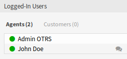
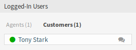
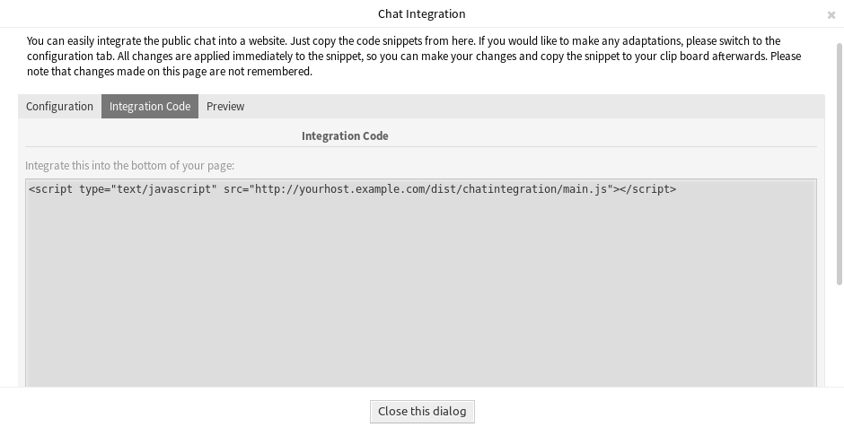

Chats verwalten¶
Siehe auch
Die Systemkonfiguration ChatEngine::Active muss aktiviert sein, damit Sie diese Funktion nutzen können.
Die Ansicht zur Chat-Verwaltung ist der zentrale Punkt der Chat-Funktion. Hier kann ein Agent die Chats verwalten sowie offene Anfragen einsehen und annehmen. Diese Ansicht bietet eine Liste von Chat-Anfragen von Kundenbenutzern, öffentlichen Benutzern und anderen Agenten sowie eine Übersicht über alle aktiven Chats.
Verwenden Sie diesen Menüeintrag, um Chats zu verwalten. Die Ansicht zur Chat-Verwaltung ist im Menü Chat verfügbar.
Chat-Verwaltung
Jeder Chat-Kanal kann mit den Optionen oben im Widget gefiltert werden, um Alle Chat-Kanäle oder nur Meine Chat-Kanäle aufzulisten, die in Persönliche Einstellungen eingestellt sind.
Neuen Chat beginnen¶
Ein Chat-Teilnehmer kann ein Agent, ein Kundenbenutzer oder ein öffentlicher Benutzer sein.
Agent zu Agent¶
So starten Sie einen Chat mit einem anderen Agenten:
Verwenden Sie das Widget Angemeldete Nutzer im Dashboard. Agenten, die den Chat nutzen können, erhalten ein Chat-Symbol neben ihrem Namen.
Verfügbare Agenten
Klicken Sie auf das Chat-Symbol neben einem Agenten-Namen.
Schreiben Sie die erste Nachricht in den Chat starten Dialog und senden Sie die Nachricht.

Chat starten Dialog
Nachdem die Chat-Anfrage an den anderen Agenten gesendet wurde, beobachten Sie den Chat in der Chat-Verwaltung. Es wird eine Browser-Benachrichtigung angezeigt, um den Agenten zu informieren.

Widget „Meine aktiven Chats“
Warten Sie auf die Antwort. Der andere Agent muss die Chat-Anfrage über den Link Chat öffnen annehmen.

Widget „Persönliche Chat-Anfragen für Sie“
Wenn der andere Agent die Chat-Anfrage annimmt, können Sie jetzt chatten.

Agent zu Agent-Chat
Agent zu Kundenbenutzer¶
So starten Sie einen Chat mit einem Kundenbenutzer:
Verwenden Sie das Widget Angemeldete Nutzer im Dashboard. Kundenbenutzer, die den Chat nutzen können, erhalten ein Chat-Symbol neben ihrem Namen.
Verfügbare Kundenbenutzer
Siehe auch
Kundenbenutzer können auch im * Kundenbenutzer-Informationszentrum* oder im Widget Kundeninformation in der Ticket-Detailansicht ausgewählt werden.
Klicken Sie auf das Chat-Symbol neben einem Kundenbenutzer-Namen.
Schreiben Sie die erste Nachricht in den Chat starten Dialog und senden Sie die Nachricht.
Chat starten Dialog
Nachdem die Chat-Anfrage an den anderen Agenten gesendet wurde, beobachten Sie den Chat in der Chat-Verwaltung. Es wird eine Browser-Benachrichtigung angezeigt, um den Agenten zu informieren.

Widget „Meine aktiven Chats“
Warten Sie auf die Antwort. Der Kundenbenutzer muss die Chat-Anfrage annehmen, die in der rechten unteren Ecke des externen Interfaces angezeigt wird.

Chat-Anfrage auf externem Interface
Wenn der Kundenbenutzer die Chat-Anfrage akzeptiert, können Sie jetzt chatten.

Agent zu Kundenbenutzer-Chat
Wenn der Kundenbenutzer den Chat schließt, ist es möglich, den Chat per E-Mail zu senden oder ein Ticket aus dem Gespräch zu erstellen.

Speichern der Konversation auf dem externen Interface
Kundenbenutzer zu Agent¶
Kundenbenutzer können einen Chat nicht direkt mit einem bestimmten Agenten starten, sondern nur allgemeine Chat-Anfragen erstellen.
So empfangen Sie eine Chat-Anfrage von einem Kundenbenutzer:
Ein Kundenbenutzer klickte auf die Schaltfläche Neue Konversation im Chatfenster in der rechten unteren Ecke des externen Interfaces.

Chat starten Fenster
Es wird eine Browser-Benachrichtigung angezeigt, um den Agenten zu informieren. Gehen Sie zur Chat-Verwaltungsansicht und öffnen Sie die allgemeine Chat-Anfrage mit dem Link Chat öffnen.

Widget Generelle Chat-Anfragen von Kunden
Akzeptieren Sie die Chat-Anfrage.

Chat-Vorschau Dialog
Wenn ein Agent die Chat-Anfrage annimmt, kann er jetzt chatten.

Kundenbenutzer zu Agent-Chat
Öffentlicher Benutzer zu Agent¶
Besucher des externen Interfaces können auch nicht direkt mit einem bestimmten Agenten einen Chat starten, sondern nur generische Chat-Anfragen erstellen. Da sie nicht angemeldet sind, müssen sie einen Namen hinzufügen, um den Chat zu starten.

Chat starten Fenster
Die Schritte sind die gleichen wie im Abschnitt Kundenbenutzer zu Agent beschrieben, aber die Chat-Anfrage wird im Widget Allgemeine Chat-Anfragen von öffentlichen Benutzern angezeigt.
Widget „Allgemeine Chat-Anfragen von öffentlichen Benutzern“
Chat-Widget¶
Das Chat-Widget ist die Hauptkomponente beim Chatten mit anderen Personen. Es bietet einen Verlauf aller Nachrichten im Chat sowie eine Liste möglicher Aktionen, abhängig von Ihrer Berechtigungsstufe.
Die Nachrichten können über das Textfeld eines Chats im Meine aktiven Chats-Widget gesendet werden, indem Sie entweder auf das Sende-Symbol neben dem Textfeld klicken oder die Eingabetaste drücken. Shift + Enter kann verwendet werden, um eine neue Zeile in die Nachricht einzufügen.
Jeder Chat-Teilnehmer hat ein farbiges Kreissymbol vor seinem Namen im Kopf des Chat-Widgets, das die Verfügbarkeit des Teilnehmers darstellt.
- Grün: Der Teilnehmer ist aktiv (verfügbar und online).
- Gelb: Teilnehmer ist weg (verfügbar, aber es wurde einige Zeit lang keine Anfrage von diesem Benutzer an den Server gesendet. Zeit, die in
ChatEngine::AgentOnlineThresholdeingestellt ist). - Rosa: Teilnehmer ist inaktiv (Chat-Anfrage wird noch nicht akzeptiert oder Teilnehmer hat den Chat verlassen).
- Rot: Teilnehmer ist nicht verfügbar (Einstellung über Verfügbarkeits-Schaltfläche).
- Schwarz: Teilnehmer hat sich abgemeldet oder die Sitzung ist abgelaufen.
Das Chat-Widget hat einige Symbole in der oberen rechten Ecke.
Chat-Menü
Das erste Dreieckssymbol vergrößert und verkleinert das Chat-Menü. Das Menü verfügt über mehrere Menüpunkte.
- Telefon-Ticket
- Ermöglicht es Ihnen, ein Telefon-Ticket zu erstellen, an das der aktuelle Chat als Artikel angehängt wird. Nachdem das Ticket erfolgreich erstellt wurde, wird der Chat automatisch geschlossen.
- Anhängen
- Ermöglicht es Ihnen, diesen Chat als Artikel an ein ausgewähltes Ticket anzuhängen. Nachdem der Artikel erstellt wurde, wird der Chat automatisch geschlossen.
- Einladen
- Ermöglicht es Ihnen, einen anderen Agenten zu diesem Chat einzuladen. Sie können aus einer Liste der verfügbaren Agenten auswählen, die Sie einladen möchten. Sobald der Agent eingeladen hat, wird eine Anfrage zum Chat eines neuen Agenten an diesen Agenten gesendet. Nachdem die Anfrage angenommen wurde, wird ein neuer interner Chat zwischen Ihnen und dem eingeladenen Agenten eingerichtet. In diesem internen Chat stehen dem eingeladenen Agenten zwei weitere Aktionen in der Symbolleiste für erweiterte Aktionen zur Verfügung: Beobachter und Teilnehmer.
- Kanal wechseln
- Über diesen Link können Sie den Kanal für diesen Chat ändern. Für die Auswahl des Zielkanals gelten die gleichen Regeln wie für die erste Auswahl eines Chat-Kanals.
- Herunterladen
- Lädt den kompletten Chatverlauf als PDF-Datei herunter.
- Neues Fenster
- Öffnet diesen Chat in einem separaten Popup-Fenster. Sie können dieses Fenster auf die gleiche Weise wie das Chat-Widget verwenden und sowohl das Widget als auch das Popup können gleichzeitig verwendet werden.
- Beobachter
Wenn Sie von einem anderen Agenten zu einem Chat eingeladen wurden, können Sie je nach Berechtigungsstufe entscheiden, ob Sie als Beobachter oder Teilnehmer am Chat teilnehmen möchten. Sobald Sie auf die Aktion in Ihrer Symbolleiste klicken, wird ein neues Chat-Widget mit dem Chat, zu dem Sie eingeladen wurden, zur Liste Ihrer aktiven Chats hinzugefügt.
Wenn Sie als Beobachter am Chat teilnehmen, können Sie nur lesen, was andere zum Chat beitragen, und Sie sind für Kundenbenutzer oder öffentliche Benutzer unsichtbar. Die Agenten erhalten weiterhin eine Nachricht, dass Sie als Beobachter am Chat teilgenommen haben.
Als Beobachter haben Sie die Möglichkeit, jederzeit Teilnehmer zu werden, indem Sie die erweiterte Aktionssymbolleiste in Ihrem Chat-Widget verwenden, abhängig von Ihrer Berechtigungsstufe.
- Teilnehmer
- Wenn Sie etwas zu dem Chat beitragen möchten, zu dem Sie eingeladen wurden, können Sie als Teilnehmer teilnehmen. Kundenbenutzer, öffentliche Benutzer und Agenten erhalten eine Nachricht, dass Sie den Chat betreten haben. Als Teilnehmer können Sie jederzeit Beobachter werden, indem Sie die erweiterte Aktionssymbolleiste in Ihrem Chat-Widget verwenden.
Das zweite Kreissymbol ermöglicht es dem Agenten, eine persönliche Überwachung für diesen Chat einzurichten, der ein Dreiwege-Schalter ist:
- Leerer Kreis: keine Überwachung.
- Leerer Kreis mit Häkchen-Symbol: Nur die Benutzeraktivität des Kunden überwachen.
- Gefüllter Kreis mit Häkchen-Symbol: Überwachung aller Aktionen.
Wenn Sie einen Chat überwachen, werden Browser-Benachrichtigungen jedes Mal angezeigt, wenn es eine neue Aktion in diesem Chat gibt.
Schließlich ermöglicht das dritte Schließen-Symbol das Schließen des Chats durch Klicken auf das X.
Chat-Integration¶
Der öffentliche Chat kann mit der Konfiguration der Chat-Integration und dem Snippet-Generator einfach in eine Website integriert werden.
So konfigurieren Sie den Chat und generieren einen Code-Ausschnitt:
Klicken Sie auf die Schaltfläche Chat-Integration konfigurieren in der linken Seitenleiste.
Passen Sie die Texte im Tab Konfiguration an.

Chat-Integration - Konfiguration
Bemerkung
Alle Änderungen, die im Tab Konfiguration vorgenommen wurden, werden nicht gespeichert. Jedes Mal, wenn Sie diesen Dialog öffnen, werden alle Felder auf die Standardwerte zurückgesetzt.
Kopieren Sie den Code-Ausschnitt aus dem Tab Integration Code und fügen Sie ihn direkt vor dem Element
</body>in Ihre Website ein.Chat-Integration - Integration Code
Sie können das Ergebnis im Tab Vorschau überprüfen.

Chat-Integration - Vorschau
Bemerkung
Die Vorschau verwendet das echte Chat-Modul. Andere Agenten müssen für den Chat zur Verfügung stehen, um eine Vorschau aller Funktionen zu erhalten.
Wenn in der Browser-Konsole eine Warnung vor gemischten Inhalten angezeigt wird, muss ein Administrator überprüfen, ob die Systemkonfigurations-Einstellung HttpType richtig eingestellt ist. Die Website muss auf dem gleichen Protokoll laufen, damit das Chat-Widget funktioniert.
Wenn die Website beispielsweise OTRS auf SSL ausführt, muss die Systemkonfigurations-Option auf https eingestellt sein.